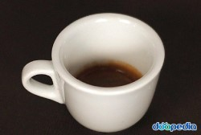
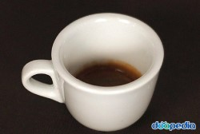
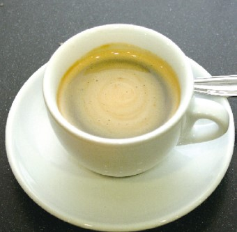
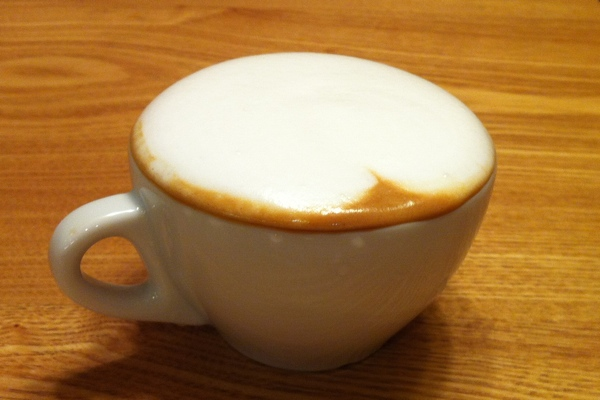
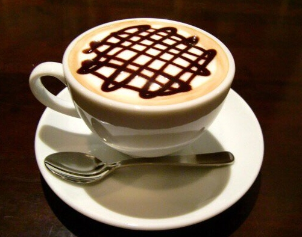
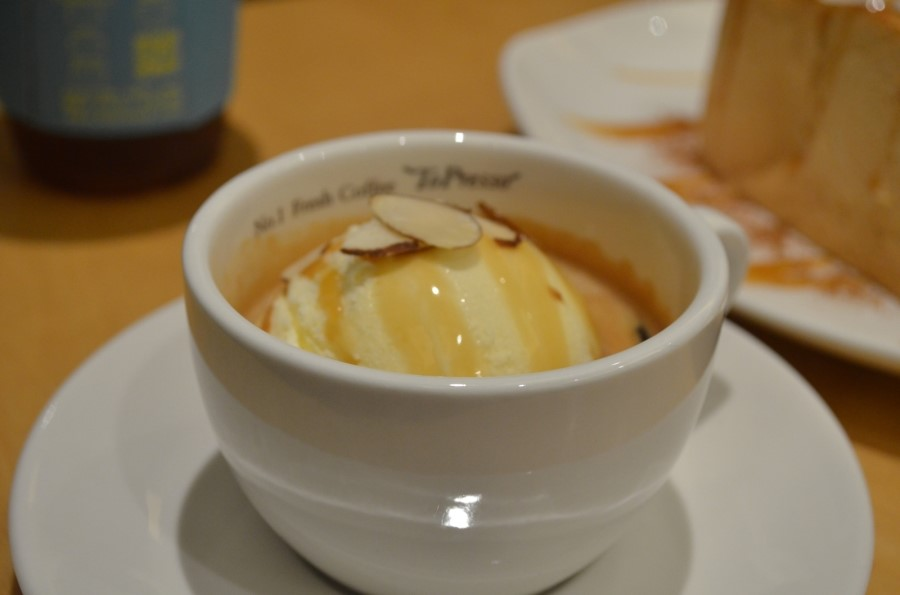

에스프레소 - 레시피 보러가기
곱게 갈아 압축한 원두가루에 뜨거운 물을 고압으로 통과시켜 뽑아낸 이탈리안 정통 커피.
어떤 커피를 가장 좋아하시나요?
곱게 갈아 압축한 원두가루에 뜨거운 물을 고압으로 통과시켜 뽑아낸 이탈리안 정통 커피.
에스프레소에 뜨거운 물을 더한 커피.
에스프레소(Caffe)와 우유(Latte)를 결합한 커피.
우유를 섞은 커피에 계핏가루를 뿌린 이탈리아식 커피.
에스프레소(Espresso)에 우유와 초콜릿을 첨가하여 초콜릿 향을 인위적으로 강조한 커피.
아이스크림 위에 진한 에스프레소(Espresso)를 얹어 내는 디저트.
